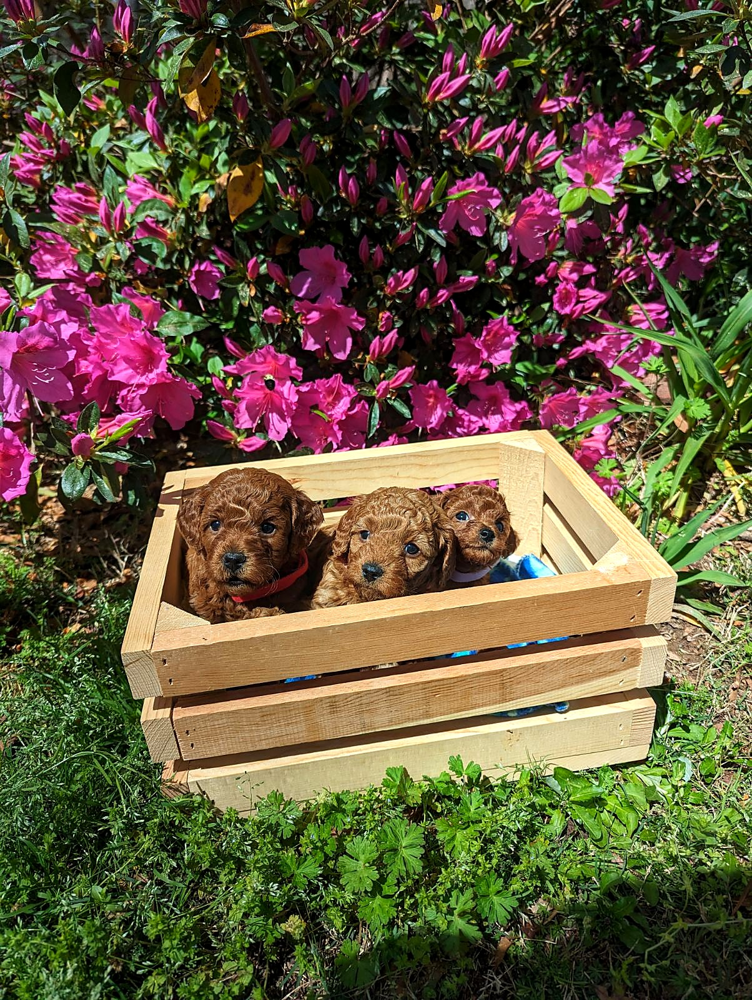

Welcome
We are so glad you are here. Choosing a puppy is an important decision, and we are honored you are considering our program.
Our goal is to raise healthy, affectionate Cavapoos who are loved, handled, and prepared for family life from the beginning.
